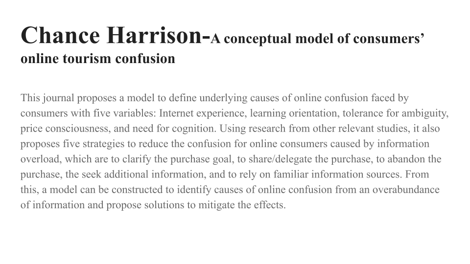

In this assignment, our group was tasked with finding scholarly articles discussing the impact of information overload on decision-making, then presenting it in a slideshow.
Here is my slide from the assignment:
In this assignment, we introduced ourselves in a discussion post, which required responding to two other students' posts. Due to the redundancy of including the original post every time in my replies, and the ambiguity of not doing so, I have decided to just include my initial post for these discussion activities.
My initial post is as follows:
My name is Chance and the IT discipline that most appeals to me is software engineering. My major is Computer Science and my current technical strengths are in Linux command line usage and Powershell/Bash scripting, as well as C/Python programming. My current weaknesses are using Makefiles and CMake, as I am still not too used to the syntax and writing CMake modules still confuses me even after doing it for a bit during an internship. My interest in software engineering stems from a desire to make the day-to-day lives of others more quick and efficient, so people can ideally spend as little time at their computer as possible (excluding me, of course!). If people just end up doing the same stuff over and over again every day, it would always be better off automated so they can focus on more interesting work (as long as it doesn't put them out of a job...).
Placeholder